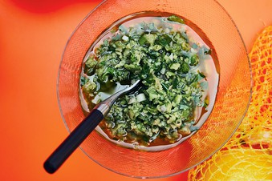

Green Olive Dressing

Description
“I love the simplicity of it: this olive dressing on green-leaf lettuce. That’s it!” says Matty Matheson, the executive chef of Parts & Labour. “The very first time I went to my future wife’s house for dinner, her mom served this salad. It was perfect. And I’m a guy who hates salads (not because of the vegetables, but because no one knows how to make a proper salad). Salads should be good lettuce with good, light dressing, not every vegetable in the world shredded and covered in poppy seed-honey dressing with a cup of granola or something.”
Ingredients
- 1 cup pitted Cerignola olives
- 1 clove garlic, peeled
- 1 green onion, chopped
- Zest and juice of 1 lemon
- 1/2 cup extra-virgin olive oil
- 1 shallot, diced
- 1 bunch parsley, leaves chopped
- 3 Tbps white vinegar
- 1/2 cup canola oil
- Kosher salt
- Freshly ground black pepper
- Green-leaf lettuce
Steps
- In a blender, pulse olives, garlic, green onion, lemon zest and juive, and olive oil multiple times until it becomes frothy and lumpy, like a tapenade. Keep pulsing- don't just leave it on blend; you don't want it to emulsify. Pour into bowl.
- Add shallot and parsley to your dressing, then add vinegar and canola oil. Add salt and pepper to taste.
- Serve dressing atop crunchy, well-washed green-leaf lettuce (little gem works well, too.